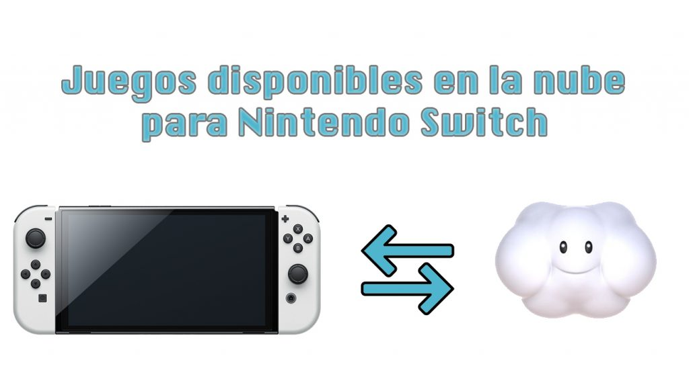
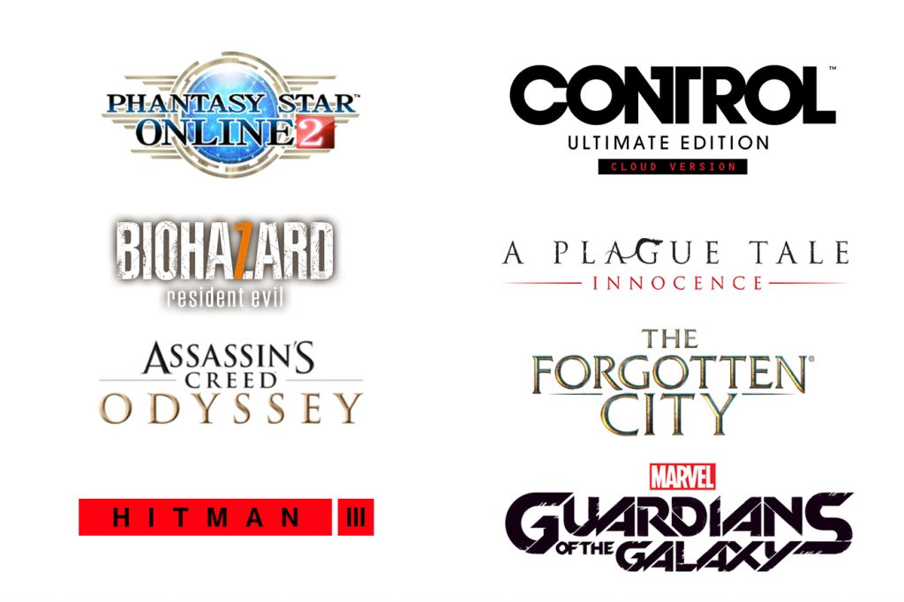

NINTENDO SWITCH Y SU JUEGO EN LA NUBE
Nintendo nos presentó al luchador que completará la plantilla de Su per Smash Bros. Ultimate (Switch, 2018). Toda una sorpresa y una buena elección: Sora de la saga Kingdom Hearts. Un personaje querido entre l os jugadores que nos trajo una noticia más: los videojuegos de esta seri e llegarán pronto a Nintendo Switch. Algo previsible que se terminaran l anzando en la consola más vendida a lo largo del año en Japón pero no tan to la forma en la que lo harán. No veremos un lanzamiento físico ni digit al sino en la nube. Una Cloud version no muy bien recibida por gran parte de la comunidad.
Nintendo Switch cuenta ya con algunos juegos así, la saga Kingdom Hearts no serán los primeros, pero no es una opción muy conocida entre los usuar ios. A grandes rasgos, funciona como Google Stadia: nuestra Switch sirve de enlace entre unos servidores remotos que hacen funcionar el juego y la pantalla. La consola replica una señal que se envía desde la nube por lo que no importa su hardware. Aquí lo que debemos tener en cuenta es una buena conexión a internet.
Aclarar que no hablamos de un servicio en la nube como suscripción similar a PlayStation Now sino de adquirir un juego al que solo pod remos jugar a través de streaming. Tampoco es un alquiler pues el ju ego permanecerá en nuestra biblioteca aunque no podremos ejecutarlo sin conexión a internet. Un modo de venta que genera un poco de incer tidumbre pues cuando los servidores desaparezcan será, en teoría, imp osible jugar al juego. Además deberemos contar siempre con un buen pun to de acceso a internet y teniendo en cuenta la portabilidad de Switch esto puede ser un inconveniente.
 